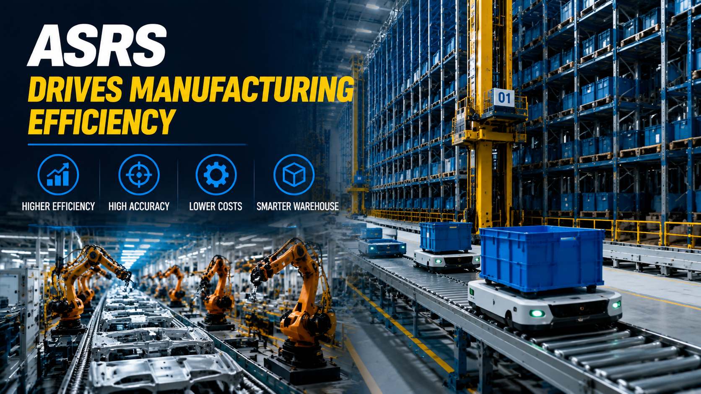
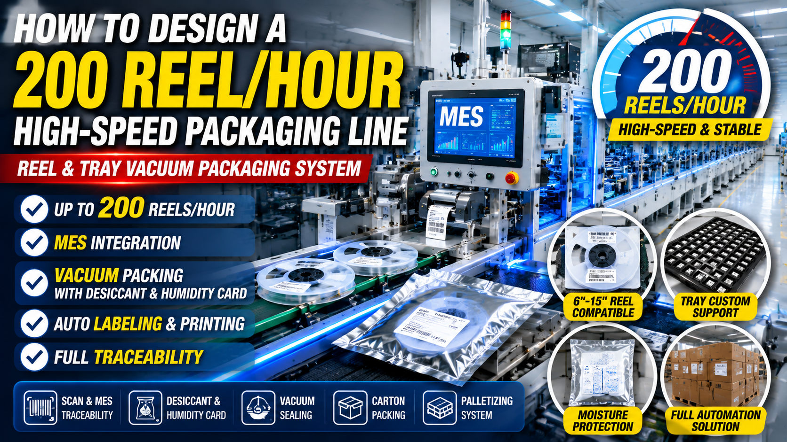
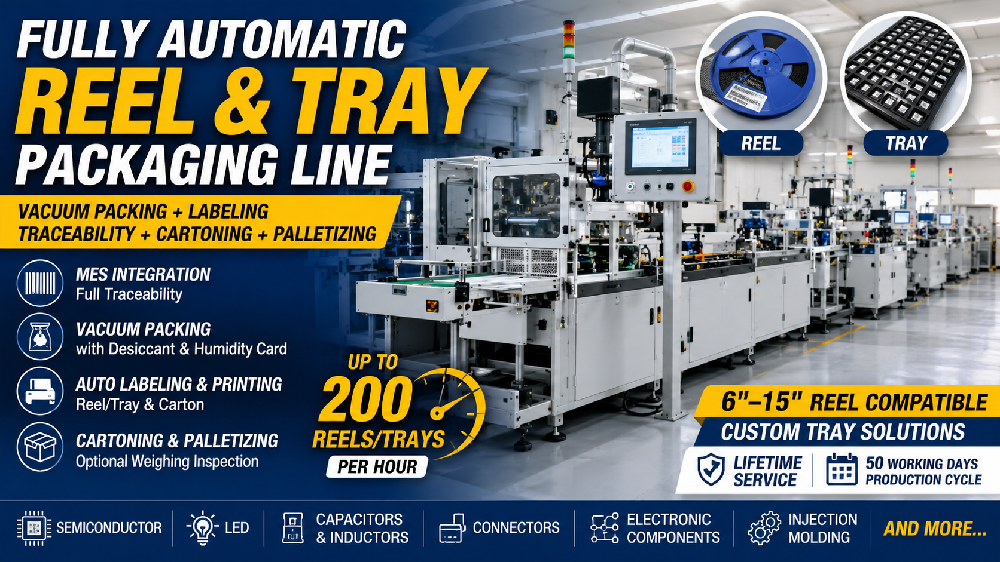
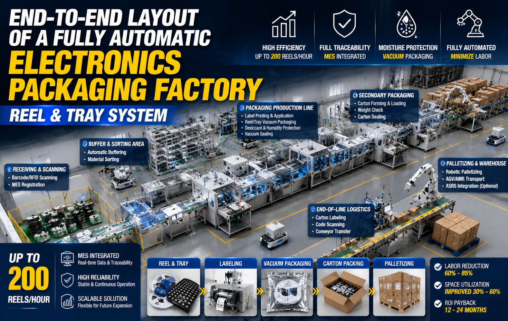
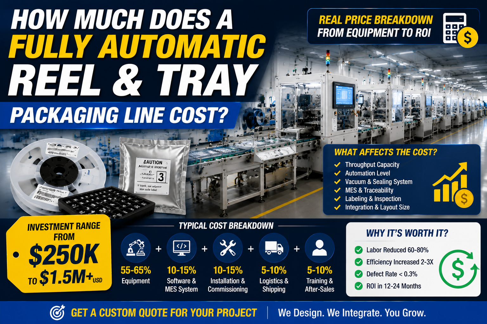
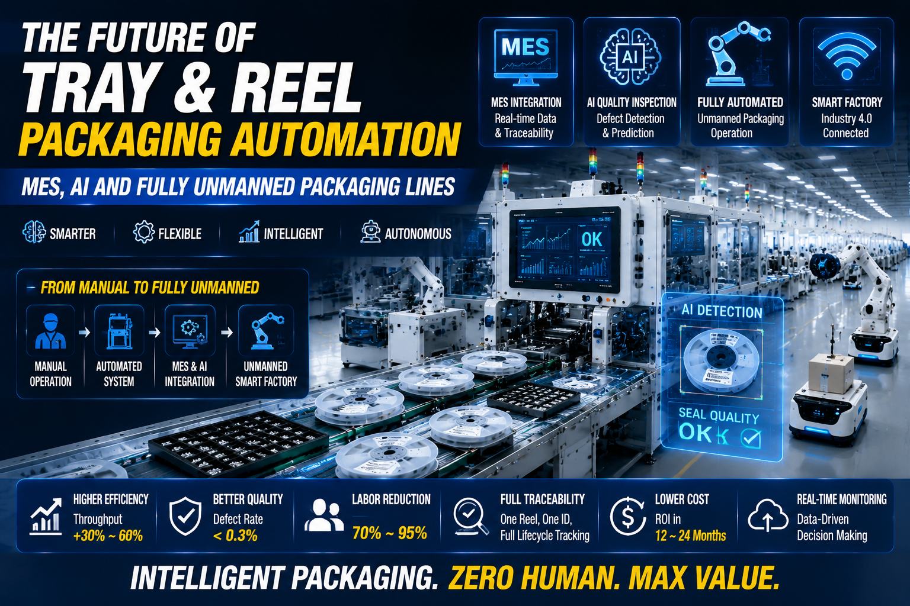

Knowledge CenterIndustrial Knowledge for Better Automation Decisions.
Explore technology insights, project breakdowns, industry trends, and practical automation solutions covering warehouse automation, smart manufacturing, packaging technologies, and industrial machinery.
Learn from real-world applications and discover ideas that help improve efficiency, productivity, and operational performance.
SolutionsCost & ROIDesign GuidesIndustry ApplicationsTechnology InsightsProject PlanningBuyer GuidesBest PracticesTroubleshootingTrends & InnovationsCompliance & SafetyCase InsightsMaintenance & OperationsProductivity ImprovementSustainability & Energy Saving

、Manufacturing industries such as automotive and electronics are under increasing pressure to reduce labor dependency, improve production speed, and i...
Read article

Productivity Improvement2026-06-12
High-speed electronics packaging lines are critical for semiconductor, LED, and precision electronics manufacturing industries where large volumes of Reel ...
Read article

Technology Insights2026-06-11
Modern electronics manufacturing requires full traceability from production to final packaging. MES (Manufacturing Execution System) plays a critical role ...
Read article

Industry Applications2026-06-11
Reel & Tray packaging automation is a critical system in modern electronics manufacturing that enables fully automated handling, labeling, vacuum sealing, ...
Read article
Technology Insights2026-06-11
Vacuum packaging plays a key role in protecting semiconductor and electronic components from moisture damage, oxidation, and contamination. This blog expla...
Read article

Buyer Guides2026-06-06
Modern electronics manufacturing factories require fully integrated end-to-end automation systems to handle Reel and Tray packaging with high precision, fu...
Read article

Buyer Guides2026-06-05
Vacuum sealing failure is one of the most critical quality risks in Reel and Tray packaging for semiconductor, LED, and precision electronics manufacturing...
Read article

Buyer Guides2026-06-01
The cost of a fully automatic Reel & Tray packaging line depends on automation level, MES integration, vacuum sealing system design, and production speed r...
Read article

Industry Applications2026-05-14
The future of Reel & Tray packaging is moving toward fully unmanned smart factories powered by MES integration, AI-based defect detection, and closed-loop ...
Read article